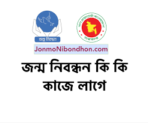
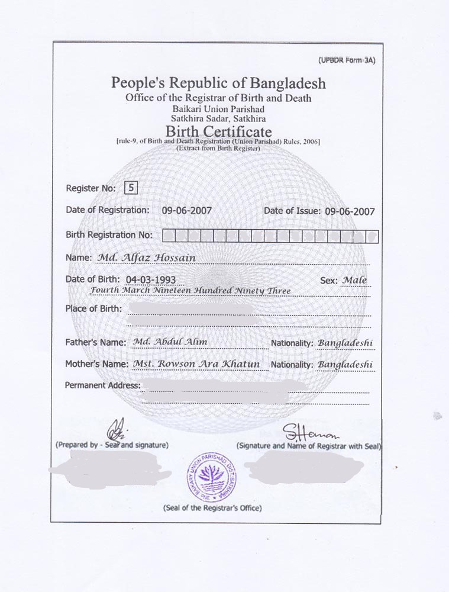

অনলাইন জন্ম নিবন্ধন বানান
জন্ম নিবন্ধন প্রতিটি নাগরিকের একটি অধিকার। একটি শিশু জন্মের পর রাষ্ট্র থেকে প্রথম যে স্বীকৃতি সে পায় সেটি হলো জন্ম নিবন্ধন। দেশের অন্যান্য নাগরিকের সাথে সে সমান অধিকারে এক কাতারে সামিল হতে পারে এই জন্ম নিবন্ধনের মাধ্যমে। জন্ম নিবন্ধন অত্যাবশ্যকীয় করার জন্য সরকার জন্ম ও মৃত্যুনিবন্ধন আইন ২০০৪ প্রণয়ন করে।
জন্ম নিবন্ধন কি?
শিশুর জন্মের পর সরকারি ডাটাবেইজে/ রেজিস্টারে নাম অন্তর্ভুক্ত করানোই জন্ম নিবন্ধন। এটি নবজাতকের নাম ও একটি জাতীয়তা নিশ্চিত করার প্রথম আইনগত ধাপ। জন্ম নিবন্ধন প্রতিটি নাগরিকের একটি অধিকার। একটি শিশু জন্মের পর রাষ্ট্র থেকে প্রথম যে স্বীকৃতি সে পায় সেটি হচ্ছে জন্ম নিবন্ধন। দেশের অন্যান্য নাগরিকের সাথে সে সমান অধিকারে এক কাতারে সামিল হতে পারে এই জন্ম-নিবন্ধনের মাধ্যমে। জন্ম-নিবন্ধন অত্যাবশ্যকীয় করার জন্য সরকার জন্ম ও মৃত্যুনিবন্ধন আইন ২০০৪ সালে প্রণয়ন করেন। জন্মনিবন্ধন আইনে বলা হয়েছে, বয়স, জাতি-গোষ্ঠী, ধরম-কিংবা জাতীয়তা সকল নির্বিশেষে বাংলাদেশে জন্মগ্রহণকারী প্রত্যেকটি মানুষের জন্ম নিবন্ধন করা বাধ্যতামূলক।

জন্ম নিবন্ধন কি কাজে লাগে?
জাতীয় পরিচয়পত্র পাওয়া পূর্ব পর্যন্ত একজন ব্যক্তির নাগরিক সনদ হচ্ছে জন্ম নিবন্ধন। যেহেতু ১৮ বছর হওয়ার আগে আমরা জাতীয় পরিচয়পত্র পাইনা, এর আগে আমাদের যেকোনো কাজে জন্ম নিবন্ধন সনদ বাধ্যতামূলকভাবে ব্যবহার করা হয়। যেমন,
১। শিক্ষা প্রতিষ্ঠানে ভর্তি
২। জাতীয় পরিচয়পত্র প্রাপ্তি
৩। পাসপোর্ট ইস্যু
৪। ভোটার তালিকা প্রণয়ন
৫। বিবাহ নিবন্ধন
৬। সরকারি, বেসরকারী বা স্বায়ত্তশাসিত সংস্থায় নিয়োগদান
৭। ড্রাইভিং লাইসেন্স ইস্যু
৮। জমি রেজিস্ট্রেশন
৯। ব্যাংক হিসাব খোলা
১০। আমদানি ও রপ্তানী লাইসেন্স প্রাপ্তি
১১। গ্যাস,পানি,টেলিফোন ও বিদ্যুৎ সংযোগ প্রাপ্তি
১২। ট্যাক্স আইডেন্টিফিকেশন নম্বর(টিআইএন) প্রাপ্তি
১৩। ঠিকাদারি লাইসেন্স প্রাপ্তি
১৪। বাড়ির নকশা অনুমোদন প্রাপ্তি
১৫। গাড়ির রেজিস্ট্রেশন প্রাপ্তি
১৬। ট্রেড লাইসেন্স প্রাপ্তি
ব্যক্তির ক্ষেত্রে তাঁর পরিচিতি ও বয়সনির্ধারণের জন্য এবং রাষ্ট্রের ক্ষেত্রে পরিকল্পনা গ্রহণের জন্য জন্মনিবন্ধন জরুরী। ব্যক্তির চিকিৎসা সেবা গ্রহণ, শিক্ষা প্রতিষ্ঠানে ভর্তি, বিবাহ প্রভৃতি ক্ষেত্রে প্রকৃত বয়স জানা অপরিহার্য, আর এই অপরিহার্যতামিটাতেই প্রয়োজন জন্মের সঙ্গে সঙ্গে জন্ম নিবন্ধন সম্পন্নকরণ।৩১ডিসেম্বর ২০০৮ এর পর থেকে নিম্নোক্ত সেবাসমূহ পেতে হলে একজন নাগরিককে তাঁরজন্ম সনদ দেখানোর আইনগত বাধ্যবাধকতা আছে:
জন্ম ও মৃত্যু নিবন্ধনআইনমূলে:
(ক) পাসপোট ইস্যু;
(খ) বিবাহ নিবন্ধন;
(গ) শিক্ষাপ্রতিষ্ঠানে ভর্ত্তি;
(ঘ) সরকারী, বেসরকারী বা স্বায়ত্বশাসিত সংস্থায়নিয়োগদান;
(ঙ) ড্রাইভিং লাইসেন্স ইস্যু;
(চ) ভোটার তালিকা প্রণয়ন;
(ছ)জমি রেজিস্ট্রেশন;
জন্ম ও মৃত্যু নিবন্ধন বিধিমালাসমূহমূলে:
(জ)ব্যাংক হিসাব খোলা;
(ঝ) আমদানী ও রপ্তানী লাইসেন্স প্রাপ্তি;
(ঞ)গ্যাস, পানি, টেলিফোন ও বিদ্যুৎ সংযোগ প্রাপ্তি;
Example

যাদের অনলাইন জন্ম নিবন্ধন করা নেই এবং অনলাইন জন্ম-নিবন্ধন করতে চান তারা আমাদের সাথে যোগাযোগ করতে পারেন। যাদের অতিদ্রুত অনলাইন জন্ম-নিবন্ধন লাগবে তাদের জন্যই আমাদের এই ওয়েবসাইট। এখানে আপনি মাত্র ২ দিনের মধ্যেই আপনার অনলাইন জন্ম-নিবন্ধন বানাতে পারবেন এবং অনেক কম টাকায়।
যাদের অনলাইন জন্ম-নিবন্ধন লাগবে তারা উপরের Contact বাটনে ক্লিক করে অথবা নিচের দেওয়া লিংকে ক্লিক করে আমাদের সাথে যোগাযোগ করতে পারেন।
মাত্র ১ দিনের মধ্যেই আপনার অনলাইন জন্ম-নিবন্ধন আপনি পেয়ে যাবেন ইনশাল্লাহ। যাদের অতিদ্রুত অনলাইন জন্ম-নিবন্ধন লাগবে তারা আমাদের সাথে যোগাযোগ করেন উপরের দেওয়া লিঙ্কটিতে ক্লিক করে অথবা নিচের দেওয়া নাম্বারে আমাদের সাথে সরাসুরি Whatsapp কথা বলতে পারেন, ধন্যবাদ।
নিচে আমাদের কাজের দাম ও কি কি লাগবে সেটি তুলে ধরেছিঃ
উপরের বিভিন্ন কাজের বিভিন্ন দাম আছে। আপনি যে জায়গা থেকে অথবা যে ধরনের কাজ করতে চান সেরকম আলাদা আলাদা দাম রয়েছে। উপরের দেওয়া জায়গা গুলো থেকে শুধু বানানো যাবে, এই জায়গা গুলর নাম শুধু আপনার বর্তমান ঠিকানায় দেওয়া থাকবে কিন্তু আপনার স্থায়ী ঠিকানা আপনি যে জায়গা দিতে বলবেন সেই জায়গাই দেওয়া হবে। উপরের দেওয়া জায়গা গুলোতে যদি আপনার বাড়ি হয় তাহলে তো কোন সমস্যাই নাই। আর যদি এই জায়গা গুলোতে আপনার বাড়ি না হয় তাহলে আপনার বর্তমান ঠিকানায় এই জায়গা গুলোর নাম দিয়ে করতে পারেন তাতেও কোনো সমস্যা হবে না। আরো বিস্তারিত জানতে আমাদের সাথে সরাসুরি যোগাযোগ করুন উপরের দেওয়া যেকোনো একটি মাধ্যমে।